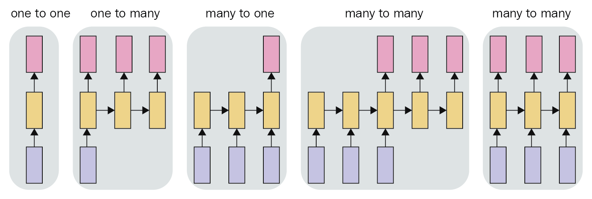

LSTM (Long Short-Term Memory)¶
The basic architecture of the

- class src.lib_analysis.methods.lstm.LSTM¶
Bases:
src.lib_analysis.basic.Basic- calc_LSTM(source_column: str, sequence_length: int, prediction_length: int = 1, result_column: str = '', ratio_train: float = - 1.0)¶
Calculate a prediction based on the LSTM (Long Short-Term Memory) method, which is a RNN (recurrent neural network) architecture.
The implementation is based on the following steps:
Vectorize the data, since it starts as a
(N,)shape, where N is the number of data points. After vectorization, it becomes of shape(N, 1).Normalize the data points to the range [0, 1].
Splits the data into 2 blocks: learning and testing. This is done for all the data available to this points, even if not necessary for the algorithm per se. The additional data split is done for reason of plotting results.
Strucutre the data for the RNN. See documentation in the
create_datasetmethod for more details.Rephase the data to a 3D for LSTM demand: samples, time steps, and features. As an example, for the N size dataset, if we use sequences (called sub-sequences in the code) of size L, and given only 1 feature (e.g. only the Closing value is used), then this tensor will be (N-L-1, L, 1). Note that the N-L-1 is due to the previous operation of structuring the data.
- Parameters
sequence_length (int) – Number of samples to be used as sub-sequences for the feature learning.
prediction_length (int, optional) – Number of samples to be used as sub-sequences for the feature learning.
ratio_train (float, optional) – Value between 0 and 1 that represents the division in the series to split between training and test data. If a value of -1 is supplied (default value), then the split is done so that the last N samples (with N = sequence_length) will be allocate to test, and thus provide a prediction of length
prediction_length, while all the remaining data will be used for training.
- create_dataset(dataset, input_sequence_length: int = 1, output_sequence_length: int = 1, shift_future: int = 0)¶
Structures the data into sequences and labels for the learning. It’s done by breaking the data into sub-sequences and pairing to the respective label (sequence or single value).
For example, in the case the predicted sequence has length one, a dataset of N entries:
\[\text{Seq}_{N} = [x_{1}, x_{2}, x_{3}, x_{4}, \ldots, x_{N}]\]a sub-sequence of size L (where \(L < N\)) to predict the next point after the sequence, it would be defined as:
\[\text{SubSeq}_{i, L} = [x_{i}, x_{i+1}, x_{i+2}, \ldots, x_{i+L}] \rightarrow \text{Predict: } x_{i+L+1}\]As a numeric example, given \(\text{Seq}\) with 6 samples:
\[\text{Seq}_{6} = [x_{1}, x_{2}, x_{3}, x_{4}, x_{5}, x_{6}]\]and using 3 samples to predict the next one, so the parameter
time_stepis equal to 3:\[ \begin{align}\begin{aligned}\text{SubSeq}_{1, 3} = \left[ x_{1}, x_{2}, x_{3} \right] \rightarrow \text{Predict: } x_{4}\\\text{SubSeq}_{2, 3} = \left[ x_{2}, x_{3}, x_{4} \right] \rightarrow \text{Predict: } x_{5}\\\text{SubSeq}_{3, 3} = \left[ x_{3}, x_{4}, x_{5} \right] \rightarrow \text{Predict: } x_{6}\end{aligned}\end{align} \]Example (predicted length greater than one):
- Parameters
dataset (data) – Name of the column in the Pandas Dataframe to be used for the calculation of the moving average.
input_sequence_length (integer, optional) – Length of the sequences.
output_sequence_length (integer, optional) – Length of the sequences.
shift_future (integer, optional) – Length of the sequences.
- Returns
sequences (Numpy array) – Array of sequence arrays paired to the labels.
labels (Numpy array) – Array of labels paired to the sequence arrays.
- create_future_index(steps: int, previous_day: numpy.timedelta64)¶
Creates an array of dates following the Numpy timedelta type to be used for the predictions. The list skips weekends, however holidays are not taken into account, so not skipped.
- Parameters
steps (int) – Length of the list of dates.
previous_day (np.timedelta64) – The last day to be used for the list. The first date of the list will be next one from the passed
previous_day.
- Returns
sequences – List with a sequence of dates, incrementing one by one. Weekends are skipped in the list.
- Return type
list of np.timedelta64
- create_lstm_model(X, Y, number_blocks: int, epochs: int, sequence_length: int, prediction_length: int, number_features: int, hidden_neurons: int = 100, save_model: bool = False)¶
Creates the LSTM model. The architecture can be different, depending on the inputs from the method. Basically 3 designs are possible:
Many to one
Many to many where the size of the input and output are the same
Many to many where the size of the input and output are different
Pictured below:
For the application, the most relevant is the last case, since more data can be used to try to predict a range not so far into the future, and thus try to increase the chances of success.
To optimize operation, the method will store the model after calculation in case the parameter
save_modelis enabled (true). Also in case this parameter is enabled, before starting a new run, it tries to load the stored model.
- squash_output(data, mode: str = 'average')¶
Combines the overlapping results from the steps into a single sequence of values. The combination can be done by different methods:
Average.
Last.
First.
Weighted average (linear weigths, with highest weight to the last value).
The squashing is the reverse operation from the
create_datasetmethod. To illustrate it, an example of a 7 elements is presented below:Incide each cell (value), the index is written, so first the data element index and then the index inside this vector. The last value is always 0, since we have here only 2 dimensions.
The operation is done by a more simple iteration. To represent it, the same data is represented below, just rearranging it. The colors are used to indicate the tracking of the “movement”:
The important point is to note that each level has an unique sum of the indexes, so the first anti-diagonal cut is denoted by sum 0, the second anti-diagonal cut by sum equal to 1, and so one.
A second note is that the initial part and final part of the squashing have less elements to be used.
- Parameters
data (np.array) – Data to be squashed.
mode (string, optional) –
The method to be used for the combination of the values. The possible methods are:
averagelastfirstweighted-average
- Returns
results – List of values from
datasquashed into a single dimension vector. The size of the output is given by the first dimension of data added to its second dimension.- Return type
np.array
{kind=link}
{kind=link}
{kind=link}
{kind=link}